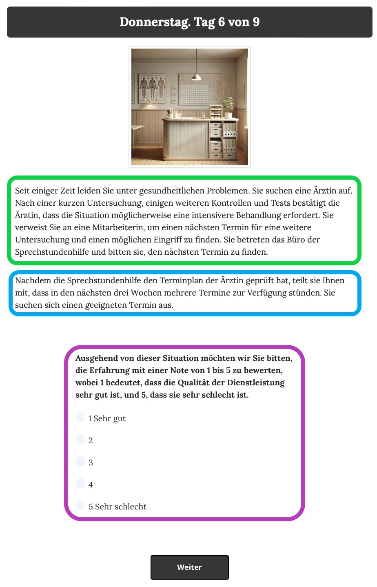
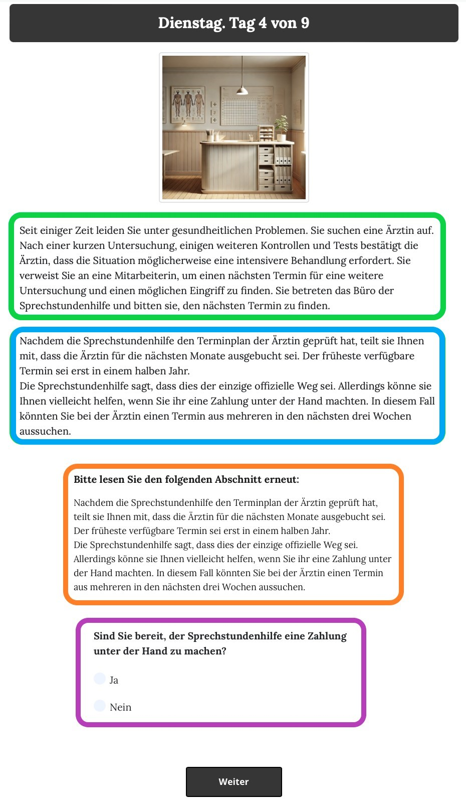

The vignette pages¶
The vignette page is where the main experimental treatments take place: On this page, participants are presented with a vignette that describes a situation in which they try to access a service in Novaland.
To have an overview on the code of the Vignette page class, see the dropdown below. The code consists of several methods: First, the is_displayed method is used to determine whether the page should be displayed to the participant. This is done by checking whether the current round number is in the list of VIGNETTE_ROUNDS object defined in the C class. The render_survey method is used to render the survey content dynamically based on the current scenario and service level. The js_vars method is used to convert the survey content to a JSON string for use in the template. The vars_for_template method is used to define the variables that are passed to the template, such as the path to the vignette image and the vignette text. The get_form_fields method is used to define the form fields (questions) that are displayed on the vignette page. The post method is used to process the form data submitted by the participant, and finally, the before_next_page method is used to check if a bribe was given by the participant.
The Vignette Page Class
class Vignette(Page):
# Define that this page is displayed only in the vignette rounds
def is_displayed(player):
return player.round_number in C.VIGNETTE_ROUNDS
# This method is used to render the survey content dynamically based on the current scenario and service level
@staticmethod
def render_survey(player: Player):
corrupt_ending = C.CORRUPT_ENDINGS[player.current_scenario] # get the text for the corrupt ending for the current scenario from the yaml file defined in the C class
is_non_state_scenario = player.current_scenario == 'handyman' # check if the current scenario is a non-state scenario (handyman)
is_corrupt = player.service_level == 'corr' # check if the service level is corrupt
profession_1, profession_2 = mitarbeiterin_correspondence[player.current_scenario] # contains the strings used when the officials are addressed in the vignette text
# Render the YAML template with the variables defined above to create the survey content
variables = dict(is_non_state_scenario=is_non_state_scenario,
corrupt_ending=corrupt_ending,
is_corrupt=is_corrupt,
income=C.AVERAGE_NOVA_INCOME,
profession_1=profession_1,
profession_2=profession_2)
# Use the yaml_template defined in the C class to store the vignette questions for rendering
rendered_yaml = Template(C.yaml_template).render(variables)
# Convert the rendered YAML content to a Python object
yaml_content = yaml.safe_load(rendered_yaml)
# Convert the Python object to a JSON string for use in the template
return json.dumps(yaml_content, indent=4)
# Converting the Python object to a JSON string
@staticmethod
def js_vars(player):
return dict(
survey=Vignette.render_survey(player) # call the render_survey on the Vignette page class to get the survey content as a JSON string
)
# This method is used to dynamically render the the picture and the texts for the vignette page
@staticmethod
def vars_for_template(player: Player): # this method is used to define the variables that are passed to the template
path_to_image = None
img = None
if player.round_number in C.VIGNETTE_ROUNDS:
img = f'{player.current_scenario}' # e.g. 'doctor', 'handyman', 'kindergarten', 'passport'
path_to_image = f'images/vignettes/{img}.jpg' # e.g. 'images/vignettes/doctor.jpg'
return {
'path_to_image': path_to_image, # e.g. 'images/vignettes/doctor.jpg'
'img': img, # e.g. 'doctor'
'vignette': f'main/vignettes/{player.current_scenario}.html', # e.g. 'main/vignettes/doctor.html'
'outcome': player.service_level, # 'pos', 'neg' or 'corr'
'vignette_header': C.scenario_headers[player.round_number - 1], # day of the week, e.g. 'Dienstag'
}
# This method is used to define the form fields (questions) that are displayed on the vignette page
# Only used for browser bots (testing purposes)
def get_form_fields(player):
if player.participant.is_browser_bot: # if the participant is a browser bot
if player.current_scenario == 'handyman': # if the scenario is 'handyman' (non-state scenario)
r = ["satisfaction_service"] # ask about satisfaction with the service, but not about government spending
else: # if the scenario is a state scenario (doctor, kindergarten, passport)
r = ["satisfaction_service", "gov_spending"] # ask about satisfaction with the service and government spending
if player.service_level == 'corr': # if the service level is corrupt
return [*r, "corruption_bin", "corruption_behavior_others"] # also ask about corruption
return r
form_model = 'player' # the model that is used to store the form data (where the models are defined in the Player class)
# The post method is used to dynamically process the form data submitted by the participant
def post(self): # this method is called when the participant submits the form
if self.participant.is_browser_bot: # if the participant is a browser bot (testing purposes)
return super().post()
try:
survey_results = json.loads(self._form_data.get('surveyResults')) #
# loop over survey_results and save them to the player object if this attr exist
for key, value in survey_results.items():
print(f'{key}: {value}')
try:
value = vignette_correspondence[key](value)
setattr(self.player, key, value)
except Exception as e:
print(f'no such field {key}; error: {str(e)}')
except Exception as e:
print(f'ERROR: {e}: post data: {self._form_data}') # error handling for debugging purposes
finally:
return super().post()
# this method is called when the participant submits the page
@staticmethod
def before_next_page(player, timeout_happened):
try:
player.bribe_is_given = player.field_maybe_none('corruption_bin') # check if the player has given a bribe
except Exception as e:
print(f'ERROR: {e}') # error handling for debugging purposes
Additionally, the code for the vignette page is implemented in the HTML file main/vignettes/vignette.html. This file contains the HTML structure and design of the vignette page, including the links to the SurveyJS library for rendering the survey, the CSS for styling the survey, and the JavaScript for handling the survey functionality. The HTML file also includes the dynamic rendering of the vignette text and image based on the current scenario and service level. Below is a simplified version of the code in this HTML file:
Vignette HTML File
[...]
<!-- Link to the SurveyJS CSS file for styling the survey -->
<link rel="stylesheet" href="{{static 'surveyjs/defaultV2.min.css'}}"/>
<!-- Link to the SurveyJS JavaScript file for survey functionality styling -->
<script src="{{static 'surveyjs/survey.jquery.min.js'}}"></script>
<!-- Link to the SurveyJS index file for additional functionality -->
<script src="{{static 'surveyjs/index.min.js'}}"></script>
<!-- Custom CSS for styling the vignette page (not important for the functionality, but only for the design) -->
<style>
[...]
</style>
<!-- Hidden input field to store the survey results before submitting the form -->
<input type="hidden" id="surveyResults" name="surveyResults">
<!-- The main content of the vignette page -->
<div class="content-box">
<!-- Display the header with the day of the week and the day count-->
<h1>{{ vignette_header }}. Tag {{ player.round_number }} von {{ C.NUM_DAYS }}</h1>
<!-- Display the vignette image -->
{{ if img}}
<div class="text-center lead m-3 border-1">
<img class="img-fluid img-thumbnail" src="{{static path_to_image}}" alt=" {{img}}" width="300">
</div>
{{ endif }}
<!-- Display the vignette text -->
<div class="text-image-container">
{{ include vignette }}
</div>
<!-- Create an empty form to submit the survey results after the function below is executed -->
<div id="surveyElement" name="surveyData"></div>
<!-- Use SurveyJS to create the survey dynamically -->
<script>
<!-- This script initializes the SurveyJS survey with the data defined in the js_vars.survey variable in the init file -->
<!-- Ensure that the SurveyJS library is loaded before executing this script -->
const json = js_vars.survey;
<!-- Parse the JSON string into a JavaScript object -->
const survey = new Survey.Model(json);
<!-- Set the survey properties for SurveyJS-->
survey.locale = "de";
<!-- Set the survey theme to BorderlessLight for a clean design (from SurveyJS) -->
survey.applyTheme(SurveyTheme.BorderlessLight);
<!-- Define all questions as mandatory -->
survey.onQuestionAdded.add((sender, options) => {
options.question.isRequired = true;
});
<!-- Convert the survey results to a JSON string when the survey is completed -->
survey.onComplete.add((sender, options) => {
const surveyResultsString = JSON.stringify(sender.data);
<!-- Find the hidden input field from above by its ID -->
const hiddenInput = document.getElementById('surveyResults');
<!-- Set the value of the hidden input field to the survey results string -->
hiddenInput.value = surveyResultsString;
<!-- Submit the form to send the survey results to the server (making it available for the init file -->
$('#form').submit();
});
<!-- Initialize the SurveyJS survey with the surveyElement div -->
$("#surveyElement").Survey({model: survey});
</script>
</div>
<!-- Prevent the mouse wheel and arrow keydown events on number inputs to avoid changing the value -->
<script>
document.addEventListener('DOMContentLoaded', (event) => {
// Prevent the wheel event on number inputs
document.addEventListener('wheel', function(e) {
if (e.target.type === 'number') {
e.preventDefault();
}
}, { passive: false });
// Prevent the arrow keydown events on number inputs
document.addEventListener('keydown', function(e) {
if (e.target.type === 'number' && (e.key === 'ArrowUp' || e.key === 'ArrowDown')) {
e.preventDefault();
}
});
});
</script>
Now, let’s have a more detailed look into the code of the vignette pages - how they are created, how they are randomized and how they are displayed to the participants.
The dynamic behaviour of the vignette page¶
The vignette page are displayed in the third, fourth, sixth, and seventh rounds of the main app and dynamically filled with the content of the current vignette scenario. The code for the vignette pages is implemented in the Vignette page class. The is_displayed method is used to determine whether the page should be displayed to the participant. This is done by checking whether the current round number is in the list of VIGNETTE_ROUNDS object defined in the C class.
The order in which the vignettes are displayed is randomized for each participant. The order is defined in the timeline variable in the creating_session function, which we discussed above. The vignettes are defined in the vignettes variable in the C class as a list of strings: vignettes = ['doctor', 'handyman', 'kindergarten', 'passport']. The randomization takes place in the creating_session function, where the order of the vignettes is randomized for each participant using the random.shuffle(vignettes) function. The randomized order is then stored in the Participant object as p.vars['vignette_order'].
The content of the vignette pages is defined in the C class as a YAML template. The YAML template is stored in the yaml_template variable and contains the questions and answer options for each vignette scenario. The YAML template is rendered dynamically in the render_survey method of the Vignette page class, where the variables are replaced with the actual values for the current scenario and service level. The rendered YAML content is then converted to a JSON string for use in the template.
The vignette headers and the vignette image are also defined in the C class. The vignette text is stored in the scenario_headers variable as a list of strings, which are displayed as the header of the vignette page. The vignette image is stored in the path_to_image variable, which is constructed based on the current scenario. The image is displayed on the vignette page using an HTML img tag. To get an impression of what the vignette page looks like, see the screenshot below. On these screenshots, different parts are highlighted in different colors to indicate their functionality. The following paragraphs explain the functionality of these parts in more detail.
The vignette text is included in the template using the include tag, which allows for the dynamic rendering of the vignette text based on the current scenario. The actual text for each vignette is stored in separate HTML files in the main/vignettes/ directory, with the file names corresponding to the scenario names (e.g., doctor.html, handyman.html, etc.). In the screenshots below, the corresponding text is highlighted in green.
After the description of the vignette, one of the three possible endings is displayed, depending on the service level of the vignette. The endings are also included in these html files, and they are dynamically rendered based on the service level of the vignette. This was done by formulating conditional statements in the HTML files based on the value of the outcome variable: {% if outcome == C.POS %}, {% elif outcome == C.NEG %}, and {% elif outcome == C.CORRUPT %}. The endings are highlighted in blue in the screenshots below.
In case of the corrupt outcome, the vignette text is displayed with a repeated ending, which is also defined in the C.CORRUPT_ENDINGS variable. This variable loads the endings from a YAML file called data/corrupt_endings.yaml, which contains the text for the repeated ending for each scenario. The endings are displayed in the vignette text using the corrupt_ending variable, which is set to the value of the C.CORRUPT_ENDINGS dictionary for the current scenario. The text for the repeated ending is displayed after the main vignette text, and it is only shown if the service level of the vignette is corrupt. This way, the participants are presented with a vignette that describes a situation in which they try to access a service in Novaland, and they are asked to answer questions about their experience with the service. The second screenshot shows the vignette page with the repeated ending for the corrupt outcome, which is highlighted in orange.
Below the text of the vignette, a survey is displayed, which consists of questions that are dynamically rendered based on the current scenario and service level. The survey is created using the SurveyJS library, which allows for the dynamic rendering of surveys based on JSON data. The survey content is defined in the rendered_yaml variable in the render_survey method. The rendered_yaml variable is a string that contains the YAML content for the survey from the data/vignette_q.yaml file, which is then converted to a JSON string for use in the template. The file path is defined in the C class as file_path = 'data/vignette_q.yaml', and it is read using the yaml.safe_load function. The YAML template contains the questions and answer options for each vignette scenario.
The survey questions are defined in the YAML template, and they are dynamically rendered based on the current scenario and service level. The survey questions include questions about satisfaction with the service, government spending, and (when the outcome of the current vignette is corrupt) corruption behavior. At the end of the render_survey method, the rendered YAML content is converted to a JSON string and returned as yaml_content variable, which is then passed to the template.
In the vars_for_template method, the variables that are passed to the template are defined. These variables include the path to the vignette image, the vignette text, the outcome of the vignette, and the vignette header. The path to the vignette image is constructed based on the name of the current scenario, and it is used to display the vignette image on the page. The vignette text is included in the template using the include tag in the HTML file, which allows for the dynamic rendering of the vignette text based on the current scenario.
In the get_form_fields method, the form fields (questions) that are displayed on the vignette page are defined. This method is only used for browser bots (testing purposes) and is not used for participants. The form fields are defined based on the current scenario and service level, and they include questions about satisfaction with the service, government spending, and corruption behavior.
The survey is displayed on the vignette page using the SurveyJS library, which allows for the dynamic rendering of surveys based on JSON data. In the template, the survey is initialized with the JSON data using the Survey.Model class from the SurveyJS library. The survey is then rendered in the surveyElement div, and the survey results are submitted to the server when the survey is completed. The survey results are stored in a hidden input field with the ID surveyResults, which is then submitted to the server when the form is submitted. This way, the survey results are available for further processing in the post method of the Vignette page class. Specifically, the post method processes the survey results submitted by the participant and saves them to the player object. The survey results are parsed from the JSON string stored in the hidden input field surveyResults, and the individual answers are saved to the corresponding player attributes. If an answer is not defined in the player model, an error message is printed to the console for debugging purposes. The screenshots display some of the survey questions in purple.
Finally, the before_next_page method is used to check if a bribe was given by the participant. This is done by checking if the corruption_bin field is set, which indicates that the participant has given a bribe. The result is stored in the bribe_is_given attribute of the player object.
Here is what the vignette page looks like for the participants:
{kind=link}
And this is what the vignette page looks like when the outcome of the vignette is corrupt, with a repeated ending before the corruption behavior question:
{kind=link}
The Outcome Page¶
After the participants submitted the vignette page, they were redirected to the EndOfDay page. This page was displayed after each smokescreen and vignette and was used to inform participants about the outcome of the vignette they just experienced and thereby to increase participants’ immersion and feeling of self-efficacy. As this page is the same one used for the outcomes of the smokescreens, see the Outcome Page Section for more detail.